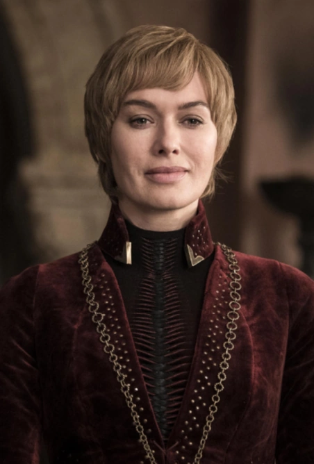

Game of Thrones is an American fantasy drama television series created by David Benioff and D. B. Weiss for HBO. It is an adaptation of A Song of Ice and Fire, a series of fantasy novels by George R. R. Martin, the first of which is A Game of Thrones. The show was shot in the United Kingdom, Canada, Croatia, Iceland, Malta, Morocco, and Spain. It premiered on HBO in the United States on April 17, 2011, and concluded on May 19, 2019, with 73 episodes broadcast over eight seasons. Set on the fictional continents of Westeros and Essos, Game of Thrones has a large ensemble cast and follows several story arcs throughout the course of the show.The first major arc concerns the Iron Throne of the Seven Kingdoms of Westeros through a web of political conflicts among the noble families either vying to claim the throne or fighting for independence from whoever sits on it. A second focuses on the last descendant of the realm's deposed ruling dynasty, who has been exiled to Essos and is plotting to return and reclaim the throne. The third follows the Night's Watch, a military order defending the realm against threats from beyond Westeros's northern border.The series received 59 Primetime Emmy Awards, the most by a drama series, including Outstanding Drama Series in 2015, 2016, 2018 and 2019. Its other awards and nominations include three Hugo Awards for Best Dramatic Presentation, a Peabody Award, and five nominations for the Golden Globe Award for Best Television Series – Drama.
Nine noble families fight for control over the lands of Westeros, while an ancient enemy returns after being dormant for millennia.In the mythical continent of Westeros, several powerful families fight for control of the Seven Kingdoms. As conflict erupts in the kingdoms of men, an ancient enemy rises once again to threaten them all. Meanwhile, the last heirs of a recently usurped dynasty plot to take back their homeland from across the Narrow Sea. Years after a rebellion spurred by a stolen bride to be and the blind ambitions of a mad King, Robert of the house Baratheon sits on the much desired Iron Throne. In the mythical land of Westeros, nine noble families fight for every inch of control and every drop of power. The King's Hand, Jon Arryn, is dead. And Robert seeks out his only other ally in all of Westeros, his childhood friend Lord Eddard "Ned" Stark. The solemn and honorable Warden of the North is tasked to depart his frozen sanctuary and join the King in the capital of King's Landing to help the now overweight and drunk Robert rule. However, a letter in the dead of night informs "Ned" that the former Hand was murdered, and that Robert will be next. So noble Ned goes against his better desires in an attempt to save his friend and the kingdoms. But political intrigue, plots, murders, and sexual desires lead to a secret that could tear the Seven Kingdoms apart. And soon Eddard will find out what happens when you play the Game of Thrones. Based on the best-selling book series "A Song of Ice and Fire" by George R.R. Martin, this sprawling HBO drama is set in a world where summers span several decades and winters can last a lifetime. From the scheming south and the savage eastern lands, to the frozen north and ancient Wall that protects the realm from the mysterious darkness beyond, the powerful families of the Seven Kingdoms are locked in a battle for the Iron Throne. This is a story of duplicity and treachery, nobility and honor, conquest and triumph. In the Game of Thrones, you either win or you die. In the mythical continent of Westeros, nine families of higher nobility (Targaryen, Lannisters, Starks, Tyrell, Martell, Greyjoys, Baratheons and Boltons) scramble bitterly to gain power over the seven kingdoms and the Iron throne. As Westeros becomes rife with political unrests, conflicts, treachery, murder and debauchery, an ancient enemy (Army of the dead) awakens and strike the sense of doom to the living folks of Westeros."
Daenerys is a young woman in her early teens. She is short of stature and very beautiful, with the silver-blonde hair and purple eyes for which House Targaryen has always been known. In her youth, Dany was a meek, timid girl with little confidence or self-esteem. She knew no life other than one of exile, dependent and in constant fear of her brother Viserys. He was the only family she knew, but was often a cruel guardian, prone to mood swings and fits of violence. Her marriage to Khal Drogo was a turning point for her; adapting to life in a Dothraki khalasar was difficult, but it allowed her to begin to achieve independence from her abusive brother, and she emerged from the experience as a strong, confident, courageous woman. Nevertheless, she has not forgotten what it was like to be a victimized child, and her experiences have left her with a compassion that is unusual in a would-be conqueror. She is determined to bring justice through her reign, and has made ending slavery a particular priority. Despite her strong moral compass, however, she is capable of dealing ruthlessly with her enemies. It was often said that the Targaryen kings tended to be either madmen or brilliant rulers, and Daenerys seems to have inherited a natural gift for leadership as her birthright. Her followers generally regard her with great respect and love, and she is often compared to her deceased brother Rhaegar, a similarly charismatic leader who was known for his skill, determination, scholarly mind and strong sense of justice. Her primary weakness as a ruler is her youth and relative inexperience; however, she has a keen intellect and learns quickly from her mistakes. Although she has matured enough to recognize that Viserys was weak, cowardly and cruel, his abiding obsession with regaining the crown he felt was his birthright has instilled in Daenerys a similar belief that reclaiming the Seven Kingdoms is both her right and her duty as the last of the Targaryens, and it remains the paramount goal of her life. Nevertheless, Westeros is a foreign land that she has never seen with her own eyes, and she sometimes longs wistfully for the house with a red door in Braavos that has come to symbolize her lost childhood.

Jon Snow, born Aegon Targaryen, is the son of Lyanna Stark and Rhaegar Targaryen, the late Prince of Dragonstone. From infancy, Jon is presented as the bastard son of Lord Eddard Stark, Lyanna's brother, and raised alongside Eddard's lawful children at Winterfell. Jon's true parentage is kept secret from everyone, including Jon himself, in order to protect him from those that sought the complete annihilation of House Targaryen. Jon joins the Night's Watch and is later elected as Lord Commander. As a result of several controversial decisions, such as allowing the wildlings to settle south of the Wall, Jon is murdered in a mutiny, but is resurrected by the Red Priestess Melisandre. Freed from his Night's Watch vows, Jon and his half-sister Sansa Stark retake Winterfell from House Bolton, restoring House Stark's dominion over the North. Jon is declared King in the North. Jon negotiates with Daenerys Targaryen for an alliance against the White Walkers in the imminent Great War. Later he pledges himself and his army to Daenerys, whom he falls in love with, subsequently abdicating his throne and being named Warden of the North. Later, Jon learns his true lineage from Samwell Tarly, revealing Daenerys is his aunt. A dragonrider whose dragon was Rhaegal, he fights in the Battle of Winterfell, during which the Night King is defeated and the return of the Long Night is prevented. Afterwards, Jon aids Daenerys in her resumed campaign to take the Iron Throne and participates in the Battle of King's Landing. However, when Daenerys lays waste to a surrendered King's Landing, Jon tries but is unable to dissuade her from more destruction and assassinates her to prevent further carnage. Following the Great Council of 305 AC, Jon is sent into exile, returning to the Night's Watch. He leads the remaining Free Folk to settle in the thawing free lands.
Queen Cersei I Lannister was the twentieth ruler of the Seven Kingdoms and the widow of King Robert Baratheon. She was the daughter of Lord Tywin Lannister, twin sister of Jaime Lannister and elder sister of Tyrion Lannister. She was involved in an incestuous relationship with Jaime, who was secretly the father of her three bastard children, Joffrey, Myrcella and Tommen. After all her children died, Cersei assumed the throne, making her the first officially recognized queen regnant in the history of the Seven Kingdoms. Her reign came to an abrupt end during the Battle of King's Landing, where she and Jaime were killed. She was the last monarch to sit on the Iron Throne.Cersei was the only daughter and eldest child of Lord Tywin and Lady Joanna Lannister. Cersei was the elder twin of Jaime Lannister and the elder sister of Tyrion Lannister. She was raised in the family seat of Casterly Rock. She was known for her great beauty as a young girl.[citation needed] Cersei's mother died when she was four years old, after giving birth to her younger brother Tyrion. Like her father, Cersei always blamed Tyrion for her mother's death and deeply resented that her mother died so that Tyrion would be brought into the world. Tywin was constantly away from home during Cersei’s childhood and teenage years, serving as Hand of the King at the capital, with only infrequent visits back to his seat at Casterly Rock. Coupled with the death of her mother, this meant that Cersei and her two brothers were primarily raised by servants attached to House Lannister. She began an incestuous relationship with Jaime in her youth which continued despite her marriage. While Cersei had other partners in King’s Landing, Jaime always kept himself strictly for her.
